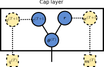
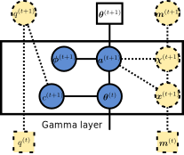
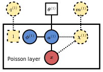

Module gabenet.poisson
Expand source code
from typing import Optional
from jax import random
import jax.numpy as jnp
import haiku as hk
from tensor_annotations.axes import Batch, Channels, Features
from tensor_annotations.jax import Array0, Array1, Array2, Array3, float32, uint32
from tensorflow_probability.substrates import jax as tfp # type: ignore
from gabenet.layers import _Module, BaseObservedLayer, BaseMiddleLayer
from gabenet.random import chinese_restaurant_table, gamma
from gabenet.utils import to_snake_string
tfd = tfp.distributions
def _sample_theta(
c: Array1[float32, Batch],
activation: Array2[float32, Batch, Features],
m_previous: Array2[uint32, Batch, Features],
q_previous: Array1[float32, Batch],
) -> Array2[float32, Batch, Features]:
"""Sample posterior of activations.
θ(t) ~ Gam[ϕ(t+1)θ(t+1) + m(t), c(t+1) + q(t)].
"""
m_samples = c.shape[0]
n_features = activation.shape[1]
theta_shape = activation + m_previous
theta_rate: Array2[float32, Batch, Features] = (c + q_previous)[..., jnp.newaxis]
assert theta_shape.shape == (m_samples, n_features)
theta = gamma(hk.next_rng_key(), theta_shape, theta_rate)
return theta
def _sample_c(
activation: Array2[float32, Batch, Features],
theta_tmin1: Array2[float32, Batch, Features],
e_0,
f_0,
) -> Array1[float32, Batch]:
"""Posterior sample the rate parameter over theta.
c_i(t+1) ~ Gam[e_0 + a_i.(t+1), f_0 + theta_i.(t)].
"""
activation, theta_tmin1 = jnp.broadcast_arrays(activation, theta_tmin1)
alpha = jnp.sum(activation, axis=1) + e_0
beta = jnp.sum(theta_tmin1, axis=1) + f_0
c = gamma(hk.next_rng_key(), alpha, beta)
return c
def _next_q(
q_previous: Array1[float32, Batch], c_t: Array1[float32, Batch]
) -> Array1[float32, Batch]:
r"""Use recurvsive relation to estimate dual-count rate q(t) from q(t-1).
q_j(t+1) := \ln [q_j(t) + c_j(t+1)] - \ln c_j(t+1).
"""
return jnp.log(q_previous + c_t) - jnp.log(c_t)
class PoissonLayer(BaseObservedLayer):
r"""Bottom layer of Poisson gamma believe network `gabenet.nets.PoissonGammaBelieve`.
.. figure:: figures/poisson_layer.svg
Mathematical background of distributions underlying `PoissonLayer`.
This layer implements the following generative model:
Given an incoming \(\theta_{ik}^{(1)}\) from the layer above, generate forward
samples
$$
\phi_{kj}^{(1)} \sim \mathrm{Dir}([\eta,\dots,\eta]), \\
a_{ij}^{(1)} = \sum_{k=1}^{K_{1}} \theta_{ik}^{(1)} \phi_{kj}^{(1)}, \\
x_{ij}^{(1)} \sim \mathrm{Pois}(a_{ij}^{(1)}),
$$
where \(K_1\) are the number of latent states (`input_size`), \(i\) refers to
sample, \(j\) to a feature coming out of the layer (`output_size` in total), and
\(k\) a latent state/topic coming into the layer. During
inference, the training data \(x_{ij}^{(1)}\) is assumed to be fixed.
"""
def set_training(self, is_training: bool) -> None:
"""Toggle training mode."""
super().set_training(is_training)
# Phi and c are fixed during inference.
if not self.is_training:
self.frozen_ = frozenset(self.frozen).union(["c", "phi"])
def forward(
self, theta: Array2[float32, Batch, Channels]
) -> Array2[uint32, Batch, Features]:
r"""Do an ancestral sampling step generating samples
\(\{\phi_{kj}^{(1)}, x_{ij}^{(1)}\}_{i,j,k} \mid \theta_{ik}^{(1)} \)."""
activation = self.forward_activation(theta)
m_samples = theta.shape[0]
x_ij = random.poisson(
hk.next_rng_key(),
lam=activation,
shape=(m_samples, self.output_size),
)
return x_ij # type: ignore
def upward(
self, x_observed: Array2[uint32, Batch, Features]
) -> tuple[Array2[uint32, Batch, Channels], Array1[float32, Batch]]:
r"""Gibbs sample \( \phi^{(1)}_{kj} \) and propagate \( \{m_{ik}^{(1)}, q_i^{(1)} \equiv 1 \} \) upward.
See `gabenet.layers.BaseObservedLayer.upward()` for details.
"""
m_samples, n_features = x_observed.shape
def _sample_missing_x(
x: Array2[uint32, Batch, Features]
) -> Array2[uint32, Batch, Features]:
"""Gibbs sample `nan` observations."""
theta_shape = (m_samples, self.input_size)
phi_shape = (self.input_size, n_features)
theta = self._get("theta", theta_shape)
phi = self._get("phi", phi_shape)
activation = theta @ phi
x_samples = random.poisson(
hk.next_rng_key(),
lam=activation,
shape=(m_samples, n_features),
)
return jnp.where(jnp.isnan(x), x_samples, x)
has_missing = jnp.any(jnp.isnan(x_observed))
x = hk.cond(
has_missing, lambda x: _sample_missing_x(x), lambda x: x, x_observed
)
m_ik = super().upward(x)
q_i = jnp.ones(shape=(m_samples,))
return m_ik, q_i
def joint_log_prob(
self,
theta_tplus1: Array2[float32, Batch, Channels],
x_observed: Array2[uint32, Batch, Features],
) -> Array0[float32]:
"""Joint likelihood of data, state, and parameters.
Args:
theta_tplus1: Hidden units from the layer above.
x_observed: Observed multinomial draws, of shape (m_samples, n_features).
"""
n_features = x_observed.shape[1]
alpha = jnp.full(shape=(1, n_features), fill_value=self.eta, dtype=jnp.float32)
phi = self._get("phi", shape=(self.input_size, n_features))
activation = theta_tplus1 @ phi
log_prob = (
tfd.Dirichlet(concentration=alpha).log_prob(phi).sum()
+ tfd.Poisson(rate=activation).log_prob(x_observed).sum()
)
return log_prob
def log_prob(self, x_observed: Array2[uint32, Batch, Features]):
"""Log-probability of the observations."""
m_samples, n_features = x_observed.shape
theta_shape = (m_samples, self.input_size)
phi_shape = (self.input_size, n_features)
theta = self._get("theta", theta_shape)
phi = self._get("phi", phi_shape) # type: ignore
activation = theta @ phi
return tfd.Poisson(rate=activation).log_prob(x_observed).sum()
class CapLayer(_Module):
r"""Top layer of the Poisson gamma belief network `gabenet.nets.PoissonGammaBelieve`.
WARNING: Only to be used in combination with a `PoissonLayer` (and optionally a
`GammaLayer`).
.. figure:: figures/cap_layer.svg
Mathematical background of distributions underlying `CapLayer`.
Forward samples are generated by the following set of conditional distributions:
$$
r_j \sim \mathrm{Gam}(\gamma_0 / K_T, c_0), \\
c_i^{(T+1)} \sim \mathrm{Gam}(e_0, f_0), \\
\theta_{ij}^{(T)} \sim \mathrm{Gam}(r_j, c_i^{(T+1)}),
$$
where \(K_T\) (`input_size`) are the number of topics, \(i\) refers to sample, \(j\) to
a latent state, and the superscript refers to the layer index \(T\) (top most
layer). The dashed distributions refer to latent counts \(x_{ij}^{(T+1)}\) and rate
factor \(q_j^{(T+1)}\) that are used for Gibbs sampling.
"""
def __init__(
self,
input_size: int,
name: Optional[str] = None,
gamma_0: float = 1.0,
c_0: float = 1.0,
e_0: float = 1.0,
f_0: float = 1.0,
frozen: Optional[tuple[str]] = None,
is_training: bool = True,
):
r"""
Args:
input_size: Number of latent states/topics \(K\) in this layers. Or,
equivalently, the number of features generated by (coming out of) this
layer.
name: Name of this layer.
gamma_0: Shape hyperparameter \(\gamma_0\) for top activation.
c_0: Rate hyperparameter \(c_0\) for top activation.
e_0: Shape hyperparameter \(e_0\) of activation rate.
f_0: Rate hyperparameter \(f_0\) of activation rate.
is_training: Is the model in training or in inference mode?
"""
if name is None:
name = to_snake_string(self.__class__.__name__)
super().__init__(name=name, frozen=frozen)
self.input_size = input_size
self.gamma_0 = jnp.array(gamma_0)
self.c_0 = jnp.array(c_0)
self.e_0 = jnp.array(e_0)
self.f_0 = jnp.array(f_0)
self.set_training(is_training)
def set_training(self, is_training: bool) -> None:
"""Toggle training mode."""
super().set_training(is_training)
if not self.is_training:
self.frozen_ = frozenset(self.frozen).union(["r"])
def joint_log_prob(self, m_samples: int):
"""Joint likelihood of data, state, and parameters."""
r = self._get("r", shape=(self.input_size,))
c = self._get("c", shape=(m_samples,))
theta = self._get("theta", (m_samples, self.input_size))
log_p_r = tfd.Gamma(
concentration=self.gamma_0 / self.input_size, rate=self.c_0
).log_prob(r)
log_p_c = tfd.Gamma(concentration=self.e_0, rate=self.f_0).log_prob(c)
log_p_theta = tfd.Gamma(
concentration=r[jnp.newaxis, ...], rate=c[..., jnp.newaxis]
).log_prob(theta)
log_prob = jnp.sum(log_p_r) + jnp.sum(log_p_c) + jnp.sum(log_p_theta)
return log_prob, theta
def upward(
self,
m_previous: Array2[uint32, Batch, Features],
q_previous: Array1[float32, Batch],
):
"""Posterior sample based on incoming samples."""
m_samples = q_previous.shape[0]
if "r" not in self.frozen_:
activation = self._get("r", shape=(self.input_size,))[jnp.newaxis, ...] # type: ignore
x_ij: Array2[uint32, Batch, Features] = chinese_restaurant_table(
hk.next_rng_key(), n=m_previous, r=activation
)
c: Array1[float32, Batch] = self._get("c", shape=(m_samples,)) # type: ignore
q = _next_q(q_previous, c)
a = self.gamma_0 / self.input_size + jnp.sum(x_ij, axis=0)
b = self.c_0 + jnp.sum(q)
r: Array1[float32, Features] = gamma(
hk.next_rng_key(), a, b, shape=(self.input_size,)
)
self._set("r", r)
return m_previous, q_previous
def downward(
self,
m_previous: Array2[uint32, Batch, Features],
q_previous: Array1[float32, Batch],
) -> tuple[Array2[float32, Batch, Features]]:
m_samples = q_previous.shape[0]
theta_shape = (m_samples, self.input_size)
r: Array1[float32, Features] = self._get("r", shape=(self.input_size,)) # type: ignore
activation: Array2[float32, Batch, Features] = r[jnp.newaxis, ...]
# θ(T) ~ Gam[r + m(T), c(T+1) + q(T)]
if "theta" not in self.frozen_:
c: Array1[float32, Batch] = self._get("c", shape=(m_samples,)) # type: ignore
theta_alpha = activation + m_previous
theta_beta: Array2[float32, Batch, Features] = (c + q_previous)[
..., jnp.newaxis
]
assert theta_alpha.shape == theta_shape
theta = gamma(hk.next_rng_key(), theta_alpha, theta_beta)
self._set("theta", theta)
else:
theta = self._get("theta", shape=theta_shape)
if "c" not in self.frozen_:
c = _sample_c(
activation=activation,
theta_tmin1=theta,
e_0=self.e_0,
f_0=self.f_0,
)
self._set("c", c)
return (theta,)
def forward(self, m_samples: int) -> Array2[float32, Batch, Features]:
r"""Do ancestral sampling step generating the set of samples
\(\{r_j, c_i^{(T+1)}, \theta_{ij}^{(T)}\}_{i,j}\)."""
alpha = self.gamma_0 / self.input_size
r: Array1[float32, Features] = gamma(
hk.next_rng_key(),
alpha,
self.c_0,
shape=(self.input_size,),
)
self._set("r", r)
c: Array1[float32, Batch] = gamma(
hk.next_rng_key(), self.e_0, self.f_0, shape=(m_samples,)
)
self._set("c", c)
theta: Array2[float32, Batch, Features] = gamma(
hk.next_rng_key(),
r[jnp.newaxis, ...],
c[..., jnp.newaxis],
shape=(m_samples, self.input_size),
)
self._set("theta", theta)
return theta
class GammaLayer(BaseMiddleLayer):
r"""Intermediate layer of Poisson gamma believe network with Dirichlet weights.
WARNING: Only to be used in combination with a `PoissonLayer` and `CapLayer`.
.. figure:: figures/gamma_layer.svg
Mathematical background of distributions underlying `GammaLayer`.
Given an incoming \(\theta_{ik}^{(t+1)}\) from the layer above (layer \(t+1\)),
generate forward samples using the following set of conditional distributions:
$$
c_i^{(t+1)} \sim \mathrm{Gam}(e_0, f_0), \\
\phi_{kj}^{(t+1)} \sim \mathrm{Dir}([\eta,\dots,\eta]), \\
a_{ij}^{(t+1)} = \sum_{k=1}^{K_{t+1}} \theta_{ik}^{(t+1)} \phi_{kj}^{(t+1)}, \\
\theta_{ij}^{(t)} \sim \mathrm{Gam}(a_{ij}^{(t+1)}, c_i^{(t+1)}),
$$
where \(K_t\) are this layer's number of latent states (`input_size`) and
\(K_{t+1}\) refers to the number of latent states (`output_size`) of the layer
above, with \(t\) the layer index (namely, this layer). Here, \(i\) refers to a
sample, \(j\) to a feature coming out of the layer (`output_size` in total), and
\(k\) a latent state/topic coming into the layer (`input_size` in total).
During inference, latent
counts \(x_{ij}^{(t+1)}\) and rate factor \(q_i^{(t+1)}\) (dashed circles) are
propogated upward from the layer below. This is done by factorising the latent counts
\(\chi_{ijk}^{(t+1)}\) with
\(x_{ij}^{(t+1)} \equiv \sum_{k=1}^{K_{t+1}} \chi_{ijk}^{(t+1)}\) to obtain
\(m_{ik}^{(t+1)} \equiv \sum_{j=1}^{K_{t}} \chi_{ijk}^{(t+1)}\).
"""
def forward(
self, theta_tplus1: Array2[float32, Batch, Channels]
) -> Array2[float32, Batch, Features]:
r"""Do a ancestral sampling step generating a set of samples
\(\{ c_i^{(t+1)}, \phi_{kj}^{(t+1)}, \theta_{ij}^{(t)} \}_{i,j,k} \mid \theta_{ik}^{(t+1)}\).
"""
m_samples = theta_tplus1.shape[0]
# Sample and save state phi.
alpha = jnp.full(
shape=(1, self.input_size), fill_value=self.eta, dtype=jnp.float32
)
phi: Array2[float32, Channels, Features] = random.dirichlet(
hk.next_rng_key(),
alpha=alpha,
shape=(self.n_components,),
) # type: ignore
self._set("phi", phi)
c: Array1[float32, Batch] = gamma(
hk.next_rng_key(), self.e_0, self.f_0, shape=(m_samples,)
)
self._set("c", c)
rate: Array3[float32, Batch, Features, Channels] = (
theta_tplus1[:, jnp.newaxis, :] * phi.T[jnp.newaxis, ...]
)
self._set("rate", rate)
activation = jnp.sum(rate, axis=-1)
theta: Array2[float32, Batch, Features] = gamma(
hk.next_rng_key(),
activation,
c[..., jnp.newaxis],
shape=(m_samples, self.input_size),
)
self._set("theta", theta)
# Allocate a state for m(t) and q(t) by initialising with arbitrary values.
# These values are not used since `upward` immediately overwrite the values.
m_init = jnp.zeros(shape=(m_samples, self.input_size), dtype=jnp.uint32)
# q_init = jnp.full(shape=(m_samples,), fill_value=jnp.nan)
q_init = jnp.ones(shape=(m_samples,), dtype=jnp.float32)
self._set("m", m_init)
self._set("q", q_init)
return theta
def joint_log_prob(self, theta_tplus1: Array2[float32, Batch, Channels]) -> tuple:
r"""Joint likelihood of data, state, and parameters.
Args:
theta_tplus1: The hidden units \(\theta^{(t+1)}\) coming into the layer.
Returns:
A pair, the joint log-likelihood and the parameters coming out of the layer.
"""
m_samples = theta_tplus1.shape[0]
alpha = jnp.full(
shape=(1, self.input_size), fill_value=self.eta, dtype=jnp.float32
)
phi = self._get("phi", (self.n_components, self.input_size))
log_phi = tfd.Dirichlet(concentration=alpha).log_prob(phi).sum()
c = self._get("c", (m_samples,))
log_c = tfd.Gamma(concentration=self.e_0, rate=self.f_0).log_prob(c).sum()
activation = theta_tplus1 @ phi
theta = self._get("theta", (m_samples, self.input_size))
log_theta = (
tfd.Gamma(concentration=activation, rate=c.reshape(-1, 1))
.log_prob(theta)
.sum()
)
log_prob = log_phi + log_c + log_theta
return log_prob, theta
def upward( # type: ignore
self,
m_previous: Array2[uint32, Batch, Features],
q_previous: Array1[float32, Batch],
) -> tuple[Array2[uint32, Batch, Channels], Array1[float32, Batch]]:
r"""Propagate latent counts and rate factors upward.
$$
x_{ij}^{(t+1)} \sim \mathrm{CRT}[m_{ij}^{(t)}, a_{ij}^{(t+1)}], \\
\chi_{ijk}^{(t+1)} \sim \mathrm{Mult}[x_{ij}^{(t+1)}, \{θ_{ik}^{(t+1)}ϕ_{kj}^{(t+1)}\}_k], \\
\phi_{kj}^{(t+1)} \sim \mathrm{Dir}[\{\eta + \sum_{i} \chi_{ijk}^{(t+1)}\}_j].
$$
"""
m_samples = m_previous.shape[0]
self._set("q", q_previous)
self._set("m", m_previous)
m_ik = super().upward(m_previous)
c: Array1[float32, Batch] = self._get("c", (m_samples,)) # type: ignore
q: Array1[float32, Batch] = _next_q(q_previous=q_previous, c_t=c)
return m_ik, q
def downward(
self, theta_tplus1: Array2[float32, Batch, Channels]
) -> tuple[Array2[float32, Batch, Features]]:
r"""Gibbs sample downward.
$$
a_{ij}^{(t+1)} = \sum_{k=1}^{K_{t+1}} \theta_{ik}^{(t+1)} \phi_{kj}^{(t+1)}, \\
\theta_{ij}^{(t)} \sim \mathrm{Gam}[a_{ij}^{(t+1)} + m_{ij}^{(t)}, c_i^{(t+1)} + q_i^{(t)}],\\
c_i^{(t+1)} \sim \mathrm{Gam}[e_0 + \sum_{j=1}^{K_t} a_{ij}^{(t+1)}, f_0 + \sum_{j=1}^{K_t}\theta_{ij}^{(t)}].
$$
"""
m_samples = theta_tplus1.shape[0]
phi_shape = (self.n_components, self.input_size)
phi: Array2[float32, Channels, Features] = self._get("phi", phi_shape) # type: ignore
rate = theta_tplus1[:, jnp.newaxis, :] * phi.T[jnp.newaxis, ...]
self._set("rate", rate)
activation = jnp.sum(rate, axis=-1)
if "theta" not in self.frozen_:
c: Array1[float32, Batch] = self._get("c", shape=(m_samples,)) # type: ignore
m_previous: Array2[uint32, Batch, Features] = self._get("m", shape=(m_samples, self.input_size)) # type: ignore
q_previous: Array1[float32, Batch] = self._get("q", shape=(m_samples,)) # type: ignore
theta = _sample_theta(
c=c, activation=activation, m_previous=m_previous, q_previous=q_previous
)
self._set("theta", theta)
else:
theta = self._get("theta", shape=(m_samples, self.n_components))
if "c" not in self.frozen_:
c = _sample_c(
activation=activation, theta_tmin1=theta, e_0=self.e_0, f_0=self.f_0
)
self._set("c", c)
return (theta,)
def set_training(self, is_training: bool) -> None:
"""Toggle training mode."""
self.is_training = is_training
self.frozen_ = frozenset(self.frozen)
if not self.is_training:
# Phi is fixed during inference.
self.frozen_ = frozenset(self.frozen).union(["phi"])Classes
class CapLayer (input_size: int, name: Optional[str] = None, gamma_0: float = 1.0, c_0: float = 1.0, e_0: float = 1.0, f_0: float = 1.0, frozen: Optional[tuple[str]] = None, is_training: bool = True)-
Top layer of the Poisson gamma belief network
PoissonGammaBelieve.WARNING: Only to be used in combination with a
PoissonLayer(and optionally aGammaLayer).
Forward samples are generated by the following set of conditional distributions: r_j \sim \mathrm{Gam}(\gamma_0 / K_T, c_0), \\ c_i^{(T+1)} \sim \mathrm{Gam}(e_0, f_0), \\ \theta_{ij}^{(T)} \sim \mathrm{Gam}(r_j, c_i^{(T+1)}), where K_T (
input_size) are the number of topics, i refers to sample, j to a latent state, and the superscript refers to the layer index T (top most layer). The dashed distributions refer to latent counts x_{ij}^{(T+1)} and rate factor q_j^{(T+1)} that are used for Gibbs sampling.Args
input_size- Number of latent states/topics K in this layers. Or, equivalently, the number of features generated by (coming out of) this layer.
name- Name of this layer.
gamma_0- Shape hyperparameter \gamma_0 for top activation.
c_0- Rate hyperparameter c_0 for top activation.
e_0- Shape hyperparameter e_0 of activation rate.
f_0- Rate hyperparameter f_0 of activation rate.
is_training- Is the model in training or in inference mode?
Expand source code
class CapLayer(_Module): r"""Top layer of the Poisson gamma belief network `gabenet.nets.PoissonGammaBelieve`. WARNING: Only to be used in combination with a `PoissonLayer` (and optionally a `GammaLayer`). .. figure:: figures/cap_layer.svg Mathematical background of distributions underlying `CapLayer`. Forward samples are generated by the following set of conditional distributions: $$ r_j \sim \mathrm{Gam}(\gamma_0 / K_T, c_0), \\ c_i^{(T+1)} \sim \mathrm{Gam}(e_0, f_0), \\ \theta_{ij}^{(T)} \sim \mathrm{Gam}(r_j, c_i^{(T+1)}), $$ where \(K_T\) (`input_size`) are the number of topics, \(i\) refers to sample, \(j\) to a latent state, and the superscript refers to the layer index \(T\) (top most layer). The dashed distributions refer to latent counts \(x_{ij}^{(T+1)}\) and rate factor \(q_j^{(T+1)}\) that are used for Gibbs sampling. """ def __init__( self, input_size: int, name: Optional[str] = None, gamma_0: float = 1.0, c_0: float = 1.0, e_0: float = 1.0, f_0: float = 1.0, frozen: Optional[tuple[str]] = None, is_training: bool = True, ): r""" Args: input_size: Number of latent states/topics \(K\) in this layers. Or, equivalently, the number of features generated by (coming out of) this layer. name: Name of this layer. gamma_0: Shape hyperparameter \(\gamma_0\) for top activation. c_0: Rate hyperparameter \(c_0\) for top activation. e_0: Shape hyperparameter \(e_0\) of activation rate. f_0: Rate hyperparameter \(f_0\) of activation rate. is_training: Is the model in training or in inference mode? """ if name is None: name = to_snake_string(self.__class__.__name__) super().__init__(name=name, frozen=frozen) self.input_size = input_size self.gamma_0 = jnp.array(gamma_0) self.c_0 = jnp.array(c_0) self.e_0 = jnp.array(e_0) self.f_0 = jnp.array(f_0) self.set_training(is_training) def set_training(self, is_training: bool) -> None: """Toggle training mode.""" super().set_training(is_training) if not self.is_training: self.frozen_ = frozenset(self.frozen).union(["r"]) def joint_log_prob(self, m_samples: int): """Joint likelihood of data, state, and parameters.""" r = self._get("r", shape=(self.input_size,)) c = self._get("c", shape=(m_samples,)) theta = self._get("theta", (m_samples, self.input_size)) log_p_r = tfd.Gamma( concentration=self.gamma_0 / self.input_size, rate=self.c_0 ).log_prob(r) log_p_c = tfd.Gamma(concentration=self.e_0, rate=self.f_0).log_prob(c) log_p_theta = tfd.Gamma( concentration=r[jnp.newaxis, ...], rate=c[..., jnp.newaxis] ).log_prob(theta) log_prob = jnp.sum(log_p_r) + jnp.sum(log_p_c) + jnp.sum(log_p_theta) return log_prob, theta def upward( self, m_previous: Array2[uint32, Batch, Features], q_previous: Array1[float32, Batch], ): """Posterior sample based on incoming samples.""" m_samples = q_previous.shape[0] if "r" not in self.frozen_: activation = self._get("r", shape=(self.input_size,))[jnp.newaxis, ...] # type: ignore x_ij: Array2[uint32, Batch, Features] = chinese_restaurant_table( hk.next_rng_key(), n=m_previous, r=activation ) c: Array1[float32, Batch] = self._get("c", shape=(m_samples,)) # type: ignore q = _next_q(q_previous, c) a = self.gamma_0 / self.input_size + jnp.sum(x_ij, axis=0) b = self.c_0 + jnp.sum(q) r: Array1[float32, Features] = gamma( hk.next_rng_key(), a, b, shape=(self.input_size,) ) self._set("r", r) return m_previous, q_previous def downward( self, m_previous: Array2[uint32, Batch, Features], q_previous: Array1[float32, Batch], ) -> tuple[Array2[float32, Batch, Features]]: m_samples = q_previous.shape[0] theta_shape = (m_samples, self.input_size) r: Array1[float32, Features] = self._get("r", shape=(self.input_size,)) # type: ignore activation: Array2[float32, Batch, Features] = r[jnp.newaxis, ...] # θ(T) ~ Gam[r + m(T), c(T+1) + q(T)] if "theta" not in self.frozen_: c: Array1[float32, Batch] = self._get("c", shape=(m_samples,)) # type: ignore theta_alpha = activation + m_previous theta_beta: Array2[float32, Batch, Features] = (c + q_previous)[ ..., jnp.newaxis ] assert theta_alpha.shape == theta_shape theta = gamma(hk.next_rng_key(), theta_alpha, theta_beta) self._set("theta", theta) else: theta = self._get("theta", shape=theta_shape) if "c" not in self.frozen_: c = _sample_c( activation=activation, theta_tmin1=theta, e_0=self.e_0, f_0=self.f_0, ) self._set("c", c) return (theta,) def forward(self, m_samples: int) -> Array2[float32, Batch, Features]: r"""Do ancestral sampling step generating the set of samples \(\{r_j, c_i^{(T+1)}, \theta_{ij}^{(T)}\}_{i,j}\).""" alpha = self.gamma_0 / self.input_size r: Array1[float32, Features] = gamma( hk.next_rng_key(), alpha, self.c_0, shape=(self.input_size,), ) self._set("r", r) c: Array1[float32, Batch] = gamma( hk.next_rng_key(), self.e_0, self.f_0, shape=(m_samples,) ) self._set("c", c) theta: Array2[float32, Batch, Features] = gamma( hk.next_rng_key(), r[jnp.newaxis, ...], c[..., jnp.newaxis], shape=(m_samples, self.input_size), ) self._set("theta", theta) return thetaAncestors
- gabenet.layers._Module
- haiku._src.module.Module
Methods
def downward(self, m_previous: tensor_annotations.jax.Array2[tensor_annotations.jax.uint32, tensor_annotations.axes.Batch, tensor_annotations.axes.Features], q_previous: tensor_annotations.jax.Array1[tensor_annotations.jax.float32, tensor_annotations.axes.Batch]) ‑> tuple[tensor_annotations.jax.Array2[tensor_annotations.jax.float32, tensor_annotations.axes.Batch, tensor_annotations.axes.Features]]-
Expand source code
def downward( self, m_previous: Array2[uint32, Batch, Features], q_previous: Array1[float32, Batch], ) -> tuple[Array2[float32, Batch, Features]]: m_samples = q_previous.shape[0] theta_shape = (m_samples, self.input_size) r: Array1[float32, Features] = self._get("r", shape=(self.input_size,)) # type: ignore activation: Array2[float32, Batch, Features] = r[jnp.newaxis, ...] # θ(T) ~ Gam[r + m(T), c(T+1) + q(T)] if "theta" not in self.frozen_: c: Array1[float32, Batch] = self._get("c", shape=(m_samples,)) # type: ignore theta_alpha = activation + m_previous theta_beta: Array2[float32, Batch, Features] = (c + q_previous)[ ..., jnp.newaxis ] assert theta_alpha.shape == theta_shape theta = gamma(hk.next_rng_key(), theta_alpha, theta_beta) self._set("theta", theta) else: theta = self._get("theta", shape=theta_shape) if "c" not in self.frozen_: c = _sample_c( activation=activation, theta_tmin1=theta, e_0=self.e_0, f_0=self.f_0, ) self._set("c", c) return (theta,) def forward(self, m_samples: int) ‑> tensor_annotations.jax.Array2[tensor_annotations.jax.float32, tensor_annotations.axes.Batch, tensor_annotations.axes.Features]-
Do ancestral sampling step generating the set of samples \{r_j, c_i^{(T+1)}, \theta_{ij}^{(T)}\}_{i,j}.
Expand source code
def forward(self, m_samples: int) -> Array2[float32, Batch, Features]: r"""Do ancestral sampling step generating the set of samples \(\{r_j, c_i^{(T+1)}, \theta_{ij}^{(T)}\}_{i,j}\).""" alpha = self.gamma_0 / self.input_size r: Array1[float32, Features] = gamma( hk.next_rng_key(), alpha, self.c_0, shape=(self.input_size,), ) self._set("r", r) c: Array1[float32, Batch] = gamma( hk.next_rng_key(), self.e_0, self.f_0, shape=(m_samples,) ) self._set("c", c) theta: Array2[float32, Batch, Features] = gamma( hk.next_rng_key(), r[jnp.newaxis, ...], c[..., jnp.newaxis], shape=(m_samples, self.input_size), ) self._set("theta", theta) return theta def joint_log_prob(self, m_samples: int)-
Joint likelihood of data, state, and parameters.
Expand source code
def joint_log_prob(self, m_samples: int): """Joint likelihood of data, state, and parameters.""" r = self._get("r", shape=(self.input_size,)) c = self._get("c", shape=(m_samples,)) theta = self._get("theta", (m_samples, self.input_size)) log_p_r = tfd.Gamma( concentration=self.gamma_0 / self.input_size, rate=self.c_0 ).log_prob(r) log_p_c = tfd.Gamma(concentration=self.e_0, rate=self.f_0).log_prob(c) log_p_theta = tfd.Gamma( concentration=r[jnp.newaxis, ...], rate=c[..., jnp.newaxis] ).log_prob(theta) log_prob = jnp.sum(log_p_r) + jnp.sum(log_p_c) + jnp.sum(log_p_theta) return log_prob, theta def set_training(self, is_training: bool) ‑> None-
Toggle training mode.
Expand source code
def set_training(self, is_training: bool) -> None: """Toggle training mode.""" super().set_training(is_training) if not self.is_training: self.frozen_ = frozenset(self.frozen).union(["r"]) def upward(self, m_previous: tensor_annotations.jax.Array2[tensor_annotations.jax.uint32, tensor_annotations.axes.Batch, tensor_annotations.axes.Features], q_previous: tensor_annotations.jax.Array1[tensor_annotations.jax.float32, tensor_annotations.axes.Batch])-
Posterior sample based on incoming samples.
Expand source code
def upward( self, m_previous: Array2[uint32, Batch, Features], q_previous: Array1[float32, Batch], ): """Posterior sample based on incoming samples.""" m_samples = q_previous.shape[0] if "r" not in self.frozen_: activation = self._get("r", shape=(self.input_size,))[jnp.newaxis, ...] # type: ignore x_ij: Array2[uint32, Batch, Features] = chinese_restaurant_table( hk.next_rng_key(), n=m_previous, r=activation ) c: Array1[float32, Batch] = self._get("c", shape=(m_samples,)) # type: ignore q = _next_q(q_previous, c) a = self.gamma_0 / self.input_size + jnp.sum(x_ij, axis=0) b = self.c_0 + jnp.sum(q) r: Array1[float32, Features] = gamma( hk.next_rng_key(), a, b, shape=(self.input_size,) ) self._set("r", r) return m_previous, q_previous
class GammaLayer (input_size: int, output_size: int, name: Optional[str] = None, eta: float = 1.0, e_0: float = 1.0, f_0: float = 1.0, frozen: Optional[tuple[str]] = None, is_training: bool = True)-
Intermediate layer of Poisson gamma believe network with Dirichlet weights.
WARNING: Only to be used in combination with a
PoissonLayerandCapLayer.
Given an incoming \theta_{ik}^{(t+1)} from the layer above (layer t+1), generate forward samples using the following set of conditional distributions: c_i^{(t+1)} \sim \mathrm{Gam}(e_0, f_0), \\ \phi_{kj}^{(t+1)} \sim \mathrm{Dir}([\eta,\dots,\eta]), \\ a_{ij}^{(t+1)} = \sum_{k=1}^{K_{t+1}} \theta_{ik}^{(t+1)} \phi_{kj}^{(t+1)}, \\ \theta_{ij}^{(t)} \sim \mathrm{Gam}(a_{ij}^{(t+1)}, c_i^{(t+1)}), where K_t are this layer's number of latent states (
input_size) and K_{t+1} refers to the number of latent states (output_size) of the layer above, with t the layer index (namely, this layer). Here, i refers to a sample, j to a feature coming out of the layer (output_sizein total), and k a latent state/topic coming into the layer (input_sizein total).During inference, latent counts x_{ij}^{(t+1)} and rate factor q_i^{(t+1)} (dashed circles) are propogated upward from the layer below. This is done by factorising the latent counts \chi_{ijk}^{(t+1)} with x_{ij}^{(t+1)} \equiv \sum_{k=1}^{K_{t+1}} \chi_{ijk}^{(t+1)} to obtain m_{ik}^{(t+1)} \equiv \sum_{j=1}^{K_{t}} \chi_{ijk}^{(t+1)}.
Args
input_size- The number of latent variables/topics coming into the layer.
output_size- The number of features coming out of layer.
name- Name of this layer.
eta- Dirichlet hyperparameter \eta on weights.
e_0- Shape hyperparameter of activation scale.
f_0- Scale hyperparameter of activation scale.
is_training- Is the model in training or inference mode?
Expand source code
class GammaLayer(BaseMiddleLayer): r"""Intermediate layer of Poisson gamma believe network with Dirichlet weights. WARNING: Only to be used in combination with a `PoissonLayer` and `CapLayer`. .. figure:: figures/gamma_layer.svg Mathematical background of distributions underlying `GammaLayer`. Given an incoming \(\theta_{ik}^{(t+1)}\) from the layer above (layer \(t+1\)), generate forward samples using the following set of conditional distributions: $$ c_i^{(t+1)} \sim \mathrm{Gam}(e_0, f_0), \\ \phi_{kj}^{(t+1)} \sim \mathrm{Dir}([\eta,\dots,\eta]), \\ a_{ij}^{(t+1)} = \sum_{k=1}^{K_{t+1}} \theta_{ik}^{(t+1)} \phi_{kj}^{(t+1)}, \\ \theta_{ij}^{(t)} \sim \mathrm{Gam}(a_{ij}^{(t+1)}, c_i^{(t+1)}), $$ where \(K_t\) are this layer's number of latent states (`input_size`) and \(K_{t+1}\) refers to the number of latent states (`output_size`) of the layer above, with \(t\) the layer index (namely, this layer). Here, \(i\) refers to a sample, \(j\) to a feature coming out of the layer (`output_size` in total), and \(k\) a latent state/topic coming into the layer (`input_size` in total). During inference, latent counts \(x_{ij}^{(t+1)}\) and rate factor \(q_i^{(t+1)}\) (dashed circles) are propogated upward from the layer below. This is done by factorising the latent counts \(\chi_{ijk}^{(t+1)}\) with \(x_{ij}^{(t+1)} \equiv \sum_{k=1}^{K_{t+1}} \chi_{ijk}^{(t+1)}\) to obtain \(m_{ik}^{(t+1)} \equiv \sum_{j=1}^{K_{t}} \chi_{ijk}^{(t+1)}\). """ def forward( self, theta_tplus1: Array2[float32, Batch, Channels] ) -> Array2[float32, Batch, Features]: r"""Do a ancestral sampling step generating a set of samples \(\{ c_i^{(t+1)}, \phi_{kj}^{(t+1)}, \theta_{ij}^{(t)} \}_{i,j,k} \mid \theta_{ik}^{(t+1)}\). """ m_samples = theta_tplus1.shape[0] # Sample and save state phi. alpha = jnp.full( shape=(1, self.input_size), fill_value=self.eta, dtype=jnp.float32 ) phi: Array2[float32, Channels, Features] = random.dirichlet( hk.next_rng_key(), alpha=alpha, shape=(self.n_components,), ) # type: ignore self._set("phi", phi) c: Array1[float32, Batch] = gamma( hk.next_rng_key(), self.e_0, self.f_0, shape=(m_samples,) ) self._set("c", c) rate: Array3[float32, Batch, Features, Channels] = ( theta_tplus1[:, jnp.newaxis, :] * phi.T[jnp.newaxis, ...] ) self._set("rate", rate) activation = jnp.sum(rate, axis=-1) theta: Array2[float32, Batch, Features] = gamma( hk.next_rng_key(), activation, c[..., jnp.newaxis], shape=(m_samples, self.input_size), ) self._set("theta", theta) # Allocate a state for m(t) and q(t) by initialising with arbitrary values. # These values are not used since `upward` immediately overwrite the values. m_init = jnp.zeros(shape=(m_samples, self.input_size), dtype=jnp.uint32) # q_init = jnp.full(shape=(m_samples,), fill_value=jnp.nan) q_init = jnp.ones(shape=(m_samples,), dtype=jnp.float32) self._set("m", m_init) self._set("q", q_init) return theta def joint_log_prob(self, theta_tplus1: Array2[float32, Batch, Channels]) -> tuple: r"""Joint likelihood of data, state, and parameters. Args: theta_tplus1: The hidden units \(\theta^{(t+1)}\) coming into the layer. Returns: A pair, the joint log-likelihood and the parameters coming out of the layer. """ m_samples = theta_tplus1.shape[0] alpha = jnp.full( shape=(1, self.input_size), fill_value=self.eta, dtype=jnp.float32 ) phi = self._get("phi", (self.n_components, self.input_size)) log_phi = tfd.Dirichlet(concentration=alpha).log_prob(phi).sum() c = self._get("c", (m_samples,)) log_c = tfd.Gamma(concentration=self.e_0, rate=self.f_0).log_prob(c).sum() activation = theta_tplus1 @ phi theta = self._get("theta", (m_samples, self.input_size)) log_theta = ( tfd.Gamma(concentration=activation, rate=c.reshape(-1, 1)) .log_prob(theta) .sum() ) log_prob = log_phi + log_c + log_theta return log_prob, theta def upward( # type: ignore self, m_previous: Array2[uint32, Batch, Features], q_previous: Array1[float32, Batch], ) -> tuple[Array2[uint32, Batch, Channels], Array1[float32, Batch]]: r"""Propagate latent counts and rate factors upward. $$ x_{ij}^{(t+1)} \sim \mathrm{CRT}[m_{ij}^{(t)}, a_{ij}^{(t+1)}], \\ \chi_{ijk}^{(t+1)} \sim \mathrm{Mult}[x_{ij}^{(t+1)}, \{θ_{ik}^{(t+1)}ϕ_{kj}^{(t+1)}\}_k], \\ \phi_{kj}^{(t+1)} \sim \mathrm{Dir}[\{\eta + \sum_{i} \chi_{ijk}^{(t+1)}\}_j]. $$ """ m_samples = m_previous.shape[0] self._set("q", q_previous) self._set("m", m_previous) m_ik = super().upward(m_previous) c: Array1[float32, Batch] = self._get("c", (m_samples,)) # type: ignore q: Array1[float32, Batch] = _next_q(q_previous=q_previous, c_t=c) return m_ik, q def downward( self, theta_tplus1: Array2[float32, Batch, Channels] ) -> tuple[Array2[float32, Batch, Features]]: r"""Gibbs sample downward. $$ a_{ij}^{(t+1)} = \sum_{k=1}^{K_{t+1}} \theta_{ik}^{(t+1)} \phi_{kj}^{(t+1)}, \\ \theta_{ij}^{(t)} \sim \mathrm{Gam}[a_{ij}^{(t+1)} + m_{ij}^{(t)}, c_i^{(t+1)} + q_i^{(t)}],\\ c_i^{(t+1)} \sim \mathrm{Gam}[e_0 + \sum_{j=1}^{K_t} a_{ij}^{(t+1)}, f_0 + \sum_{j=1}^{K_t}\theta_{ij}^{(t)}]. $$ """ m_samples = theta_tplus1.shape[0] phi_shape = (self.n_components, self.input_size) phi: Array2[float32, Channels, Features] = self._get("phi", phi_shape) # type: ignore rate = theta_tplus1[:, jnp.newaxis, :] * phi.T[jnp.newaxis, ...] self._set("rate", rate) activation = jnp.sum(rate, axis=-1) if "theta" not in self.frozen_: c: Array1[float32, Batch] = self._get("c", shape=(m_samples,)) # type: ignore m_previous: Array2[uint32, Batch, Features] = self._get("m", shape=(m_samples, self.input_size)) # type: ignore q_previous: Array1[float32, Batch] = self._get("q", shape=(m_samples,)) # type: ignore theta = _sample_theta( c=c, activation=activation, m_previous=m_previous, q_previous=q_previous ) self._set("theta", theta) else: theta = self._get("theta", shape=(m_samples, self.n_components)) if "c" not in self.frozen_: c = _sample_c( activation=activation, theta_tmin1=theta, e_0=self.e_0, f_0=self.f_0 ) self._set("c", c) return (theta,) def set_training(self, is_training: bool) -> None: """Toggle training mode.""" self.is_training = is_training self.frozen_ = frozenset(self.frozen) if not self.is_training: # Phi is fixed during inference. self.frozen_ = frozenset(self.frozen).union(["phi"])Ancestors
- BaseMiddleLayer
- gabenet.layers._Module
- haiku._src.module.Module
Methods
def downward(self, theta_tplus1: tensor_annotations.jax.Array2[tensor_annotations.jax.float32, tensor_annotations.axes.Batch, tensor_annotations.axes.Channels]) ‑> tuple[tensor_annotations.jax.Array2[tensor_annotations.jax.float32, tensor_annotations.axes.Batch, tensor_annotations.axes.Features]]-
Gibbs sample downward.
a_{ij}^{(t+1)} = \sum_{k=1}^{K_{t+1}} \theta_{ik}^{(t+1)} \phi_{kj}^{(t+1)}, \\ \theta_{ij}^{(t)} \sim \mathrm{Gam}[a_{ij}^{(t+1)} + m_{ij}^{(t)}, c_i^{(t+1)} + q_i^{(t)}],\\ c_i^{(t+1)} \sim \mathrm{Gam}[e_0 + \sum_{j=1}^{K_t} a_{ij}^{(t+1)}, f_0 + \sum_{j=1}^{K_t}\theta_{ij}^{(t)}].
Expand source code
def downward( self, theta_tplus1: Array2[float32, Batch, Channels] ) -> tuple[Array2[float32, Batch, Features]]: r"""Gibbs sample downward. $$ a_{ij}^{(t+1)} = \sum_{k=1}^{K_{t+1}} \theta_{ik}^{(t+1)} \phi_{kj}^{(t+1)}, \\ \theta_{ij}^{(t)} \sim \mathrm{Gam}[a_{ij}^{(t+1)} + m_{ij}^{(t)}, c_i^{(t+1)} + q_i^{(t)}],\\ c_i^{(t+1)} \sim \mathrm{Gam}[e_0 + \sum_{j=1}^{K_t} a_{ij}^{(t+1)}, f_0 + \sum_{j=1}^{K_t}\theta_{ij}^{(t)}]. $$ """ m_samples = theta_tplus1.shape[0] phi_shape = (self.n_components, self.input_size) phi: Array2[float32, Channels, Features] = self._get("phi", phi_shape) # type: ignore rate = theta_tplus1[:, jnp.newaxis, :] * phi.T[jnp.newaxis, ...] self._set("rate", rate) activation = jnp.sum(rate, axis=-1) if "theta" not in self.frozen_: c: Array1[float32, Batch] = self._get("c", shape=(m_samples,)) # type: ignore m_previous: Array2[uint32, Batch, Features] = self._get("m", shape=(m_samples, self.input_size)) # type: ignore q_previous: Array1[float32, Batch] = self._get("q", shape=(m_samples,)) # type: ignore theta = _sample_theta( c=c, activation=activation, m_previous=m_previous, q_previous=q_previous ) self._set("theta", theta) else: theta = self._get("theta", shape=(m_samples, self.n_components)) if "c" not in self.frozen_: c = _sample_c( activation=activation, theta_tmin1=theta, e_0=self.e_0, f_0=self.f_0 ) self._set("c", c) return (theta,) def forward(self, theta_tplus1: tensor_annotations.jax.Array2[tensor_annotations.jax.float32, tensor_annotations.axes.Batch, tensor_annotations.axes.Channels]) ‑> tensor_annotations.jax.Array2[tensor_annotations.jax.float32, tensor_annotations.axes.Batch, tensor_annotations.axes.Features]-
Do a ancestral sampling step generating a set of samples \{ c_i^{(t+1)}, \phi_{kj}^{(t+1)}, \theta_{ij}^{(t)} \}_{i,j,k} \mid \theta_{ik}^{(t+1)}.
Expand source code
def forward( self, theta_tplus1: Array2[float32, Batch, Channels] ) -> Array2[float32, Batch, Features]: r"""Do a ancestral sampling step generating a set of samples \(\{ c_i^{(t+1)}, \phi_{kj}^{(t+1)}, \theta_{ij}^{(t)} \}_{i,j,k} \mid \theta_{ik}^{(t+1)}\). """ m_samples = theta_tplus1.shape[0] # Sample and save state phi. alpha = jnp.full( shape=(1, self.input_size), fill_value=self.eta, dtype=jnp.float32 ) phi: Array2[float32, Channels, Features] = random.dirichlet( hk.next_rng_key(), alpha=alpha, shape=(self.n_components,), ) # type: ignore self._set("phi", phi) c: Array1[float32, Batch] = gamma( hk.next_rng_key(), self.e_0, self.f_0, shape=(m_samples,) ) self._set("c", c) rate: Array3[float32, Batch, Features, Channels] = ( theta_tplus1[:, jnp.newaxis, :] * phi.T[jnp.newaxis, ...] ) self._set("rate", rate) activation = jnp.sum(rate, axis=-1) theta: Array2[float32, Batch, Features] = gamma( hk.next_rng_key(), activation, c[..., jnp.newaxis], shape=(m_samples, self.input_size), ) self._set("theta", theta) # Allocate a state for m(t) and q(t) by initialising with arbitrary values. # These values are not used since `upward` immediately overwrite the values. m_init = jnp.zeros(shape=(m_samples, self.input_size), dtype=jnp.uint32) # q_init = jnp.full(shape=(m_samples,), fill_value=jnp.nan) q_init = jnp.ones(shape=(m_samples,), dtype=jnp.float32) self._set("m", m_init) self._set("q", q_init) return theta def joint_log_prob(self, theta_tplus1: tensor_annotations.jax.Array2[tensor_annotations.jax.float32, tensor_annotations.axes.Batch, tensor_annotations.axes.Channels]) ‑> tuple-
Joint likelihood of data, state, and parameters.
Args
theta_tplus1- The hidden units \theta^{(t+1)} coming into the layer.
Returns
A pair, the joint log-likelihood and the parameters coming out of the layer.
Expand source code
def joint_log_prob(self, theta_tplus1: Array2[float32, Batch, Channels]) -> tuple: r"""Joint likelihood of data, state, and parameters. Args: theta_tplus1: The hidden units \(\theta^{(t+1)}\) coming into the layer. Returns: A pair, the joint log-likelihood and the parameters coming out of the layer. """ m_samples = theta_tplus1.shape[0] alpha = jnp.full( shape=(1, self.input_size), fill_value=self.eta, dtype=jnp.float32 ) phi = self._get("phi", (self.n_components, self.input_size)) log_phi = tfd.Dirichlet(concentration=alpha).log_prob(phi).sum() c = self._get("c", (m_samples,)) log_c = tfd.Gamma(concentration=self.e_0, rate=self.f_0).log_prob(c).sum() activation = theta_tplus1 @ phi theta = self._get("theta", (m_samples, self.input_size)) log_theta = ( tfd.Gamma(concentration=activation, rate=c.reshape(-1, 1)) .log_prob(theta) .sum() ) log_prob = log_phi + log_c + log_theta return log_prob, theta def upward(self, m_previous: tensor_annotations.jax.Array2[tensor_annotations.jax.uint32, tensor_annotations.axes.Batch, tensor_annotations.axes.Features], q_previous: tensor_annotations.jax.Array1[tensor_annotations.jax.float32, tensor_annotations.axes.Batch]) ‑> tuple[tensor_annotations.jax.Array2[tensor_annotations.jax.uint32, tensor_annotations.axes.Batch, tensor_annotations.axes.Channels], tensor_annotations.jax.Array1[tensor_annotations.jax.float32, tensor_annotations.axes.Batch]]-
Propagate latent counts and rate factors upward.
x_{ij}^{(t+1)} \sim \mathrm{CRT}[m_{ij}^{(t)}, a_{ij}^{(t+1)}], \\ \chi_{ijk}^{(t+1)} \sim \mathrm{Mult}[x_{ij}^{(t+1)}, \{θ_{ik}^{(t+1)}ϕ_{kj}^{(t+1)}\}_k], \\ \phi_{kj}^{(t+1)} \sim \mathrm{Dir}[\{\eta + \sum_{i} \chi_{ijk}^{(t+1)}\}_j].
Expand source code
def upward( # type: ignore self, m_previous: Array2[uint32, Batch, Features], q_previous: Array1[float32, Batch], ) -> tuple[Array2[uint32, Batch, Channels], Array1[float32, Batch]]: r"""Propagate latent counts and rate factors upward. $$ x_{ij}^{(t+1)} \sim \mathrm{CRT}[m_{ij}^{(t)}, a_{ij}^{(t+1)}], \\ \chi_{ijk}^{(t+1)} \sim \mathrm{Mult}[x_{ij}^{(t+1)}, \{θ_{ik}^{(t+1)}ϕ_{kj}^{(t+1)}\}_k], \\ \phi_{kj}^{(t+1)} \sim \mathrm{Dir}[\{\eta + \sum_{i} \chi_{ijk}^{(t+1)}\}_j]. $$ """ m_samples = m_previous.shape[0] self._set("q", q_previous) self._set("m", m_previous) m_ik = super().upward(m_previous) c: Array1[float32, Batch] = self._get("c", (m_samples,)) # type: ignore q: Array1[float32, Batch] = _next_q(q_previous=q_previous, c_t=c) return m_ik, q
Inherited members
class PoissonLayer (input_size: int, output_size: int, name: Optional[str] = None, eta: float = 1.0, frozen: Optional[tuple[str]] = None, is_training: bool = True)-
Bottom layer of Poisson gamma believe network
PoissonGammaBelieve.
This layer implements the following generative model:
Given an incoming \theta_{ik}^{(1)} from the layer above, generate forward samples \phi_{kj}^{(1)} \sim \mathrm{Dir}([\eta,\dots,\eta]), \\ a_{ij}^{(1)} = \sum_{k=1}^{K_{1}} \theta_{ik}^{(1)} \phi_{kj}^{(1)}, \\ x_{ij}^{(1)} \sim \mathrm{Pois}(a_{ij}^{(1)}), where K_1 are the number of latent states (
input_size), i refers to sample, j to a feature coming out of the layer (output_sizein total), and k a latent state/topic coming into the layer. During inference, the training data x_{ij}^{(1)} is assumed to be fixed.Args
input_size- The number of latent variables coming into the layer.
output_size- The number of features in the dataset.
name- Name of this layer.
eta- Dirichlet hyperparameter \eta on weights.
is_training- Whether the model is in training or inference mode.
Expand source code
class PoissonLayer(BaseObservedLayer): r"""Bottom layer of Poisson gamma believe network `gabenet.nets.PoissonGammaBelieve`. .. figure:: figures/poisson_layer.svg Mathematical background of distributions underlying `PoissonLayer`. This layer implements the following generative model: Given an incoming \(\theta_{ik}^{(1)}\) from the layer above, generate forward samples $$ \phi_{kj}^{(1)} \sim \mathrm{Dir}([\eta,\dots,\eta]), \\ a_{ij}^{(1)} = \sum_{k=1}^{K_{1}} \theta_{ik}^{(1)} \phi_{kj}^{(1)}, \\ x_{ij}^{(1)} \sim \mathrm{Pois}(a_{ij}^{(1)}), $$ where \(K_1\) are the number of latent states (`input_size`), \(i\) refers to sample, \(j\) to a feature coming out of the layer (`output_size` in total), and \(k\) a latent state/topic coming into the layer. During inference, the training data \(x_{ij}^{(1)}\) is assumed to be fixed. """ def set_training(self, is_training: bool) -> None: """Toggle training mode.""" super().set_training(is_training) # Phi and c are fixed during inference. if not self.is_training: self.frozen_ = frozenset(self.frozen).union(["c", "phi"]) def forward( self, theta: Array2[float32, Batch, Channels] ) -> Array2[uint32, Batch, Features]: r"""Do an ancestral sampling step generating samples \(\{\phi_{kj}^{(1)}, x_{ij}^{(1)}\}_{i,j,k} \mid \theta_{ik}^{(1)} \).""" activation = self.forward_activation(theta) m_samples = theta.shape[0] x_ij = random.poisson( hk.next_rng_key(), lam=activation, shape=(m_samples, self.output_size), ) return x_ij # type: ignore def upward( self, x_observed: Array2[uint32, Batch, Features] ) -> tuple[Array2[uint32, Batch, Channels], Array1[float32, Batch]]: r"""Gibbs sample \( \phi^{(1)}_{kj} \) and propagate \( \{m_{ik}^{(1)}, q_i^{(1)} \equiv 1 \} \) upward. See `gabenet.layers.BaseObservedLayer.upward()` for details. """ m_samples, n_features = x_observed.shape def _sample_missing_x( x: Array2[uint32, Batch, Features] ) -> Array2[uint32, Batch, Features]: """Gibbs sample `nan` observations.""" theta_shape = (m_samples, self.input_size) phi_shape = (self.input_size, n_features) theta = self._get("theta", theta_shape) phi = self._get("phi", phi_shape) activation = theta @ phi x_samples = random.poisson( hk.next_rng_key(), lam=activation, shape=(m_samples, n_features), ) return jnp.where(jnp.isnan(x), x_samples, x) has_missing = jnp.any(jnp.isnan(x_observed)) x = hk.cond( has_missing, lambda x: _sample_missing_x(x), lambda x: x, x_observed ) m_ik = super().upward(x) q_i = jnp.ones(shape=(m_samples,)) return m_ik, q_i def joint_log_prob( self, theta_tplus1: Array2[float32, Batch, Channels], x_observed: Array2[uint32, Batch, Features], ) -> Array0[float32]: """Joint likelihood of data, state, and parameters. Args: theta_tplus1: Hidden units from the layer above. x_observed: Observed multinomial draws, of shape (m_samples, n_features). """ n_features = x_observed.shape[1] alpha = jnp.full(shape=(1, n_features), fill_value=self.eta, dtype=jnp.float32) phi = self._get("phi", shape=(self.input_size, n_features)) activation = theta_tplus1 @ phi log_prob = ( tfd.Dirichlet(concentration=alpha).log_prob(phi).sum() + tfd.Poisson(rate=activation).log_prob(x_observed).sum() ) return log_prob def log_prob(self, x_observed: Array2[uint32, Batch, Features]): """Log-probability of the observations.""" m_samples, n_features = x_observed.shape theta_shape = (m_samples, self.input_size) phi_shape = (self.input_size, n_features) theta = self._get("theta", theta_shape) phi = self._get("phi", phi_shape) # type: ignore activation = theta @ phi return tfd.Poisson(rate=activation).log_prob(x_observed).sum()Ancestors
- BaseObservedLayer
- gabenet.layers._Module
- haiku._src.module.Module
Methods
def forward(self, theta: tensor_annotations.jax.Array2[tensor_annotations.jax.float32, tensor_annotations.axes.Batch, tensor_annotations.axes.Channels]) ‑> tensor_annotations.jax.Array2[tensor_annotations.jax.uint32, tensor_annotations.axes.Batch, tensor_annotations.axes.Features]-
Do an ancestral sampling step generating samples \{\phi_{kj}^{(1)}, x_{ij}^{(1)}\}_{i,j,k} \mid \theta_{ik}^{(1)} .
Expand source code
def forward( self, theta: Array2[float32, Batch, Channels] ) -> Array2[uint32, Batch, Features]: r"""Do an ancestral sampling step generating samples \(\{\phi_{kj}^{(1)}, x_{ij}^{(1)}\}_{i,j,k} \mid \theta_{ik}^{(1)} \).""" activation = self.forward_activation(theta) m_samples = theta.shape[0] x_ij = random.poisson( hk.next_rng_key(), lam=activation, shape=(m_samples, self.output_size), ) return x_ij # type: ignore def joint_log_prob(self, theta_tplus1: tensor_annotations.jax.Array2[tensor_annotations.jax.float32, tensor_annotations.axes.Batch, tensor_annotations.axes.Channels], x_observed: tensor_annotations.jax.Array2[tensor_annotations.jax.uint32, tensor_annotations.axes.Batch, tensor_annotations.axes.Features]) ‑> tensor_annotations.jax.Array0[tensor_annotations.jax.float32]-
Joint likelihood of data, state, and parameters.
Args
theta_tplus1- Hidden units from the layer above.
x_observed- Observed multinomial draws, of shape (m_samples, n_features).
Expand source code
def joint_log_prob( self, theta_tplus1: Array2[float32, Batch, Channels], x_observed: Array2[uint32, Batch, Features], ) -> Array0[float32]: """Joint likelihood of data, state, and parameters. Args: theta_tplus1: Hidden units from the layer above. x_observed: Observed multinomial draws, of shape (m_samples, n_features). """ n_features = x_observed.shape[1] alpha = jnp.full(shape=(1, n_features), fill_value=self.eta, dtype=jnp.float32) phi = self._get("phi", shape=(self.input_size, n_features)) activation = theta_tplus1 @ phi log_prob = ( tfd.Dirichlet(concentration=alpha).log_prob(phi).sum() + tfd.Poisson(rate=activation).log_prob(x_observed).sum() ) return log_prob def log_prob(self, x_observed: tensor_annotations.jax.Array2[tensor_annotations.jax.uint32, tensor_annotations.axes.Batch, tensor_annotations.axes.Features])-
Log-probability of the observations.
Expand source code
def log_prob(self, x_observed: Array2[uint32, Batch, Features]): """Log-probability of the observations.""" m_samples, n_features = x_observed.shape theta_shape = (m_samples, self.input_size) phi_shape = (self.input_size, n_features) theta = self._get("theta", theta_shape) phi = self._get("phi", phi_shape) # type: ignore activation = theta @ phi return tfd.Poisson(rate=activation).log_prob(x_observed).sum() def set_training(self, is_training: bool) ‑> None-
Toggle training mode.
Expand source code
def set_training(self, is_training: bool) -> None: """Toggle training mode.""" super().set_training(is_training) # Phi and c are fixed during inference. if not self.is_training: self.frozen_ = frozenset(self.frozen).union(["c", "phi"]) def upward(self, x_observed: tensor_annotations.jax.Array2[tensor_annotations.jax.uint32, tensor_annotations.axes.Batch, tensor_annotations.axes.Features]) ‑> tuple[tensor_annotations.jax.Array2[tensor_annotations.jax.uint32, tensor_annotations.axes.Batch, tensor_annotations.axes.Channels], tensor_annotations.jax.Array1[tensor_annotations.jax.float32, tensor_annotations.axes.Batch]]-
Gibbs sample \phi^{(1)}_{kj} and propagate \{m_{ik}^{(1)}, q_i^{(1)} \equiv 1 \} upward.
See
BaseObservedLayer.upward()for details.Expand source code
def upward( self, x_observed: Array2[uint32, Batch, Features] ) -> tuple[Array2[uint32, Batch, Channels], Array1[float32, Batch]]: r"""Gibbs sample \( \phi^{(1)}_{kj} \) and propagate \( \{m_{ik}^{(1)}, q_i^{(1)} \equiv 1 \} \) upward. See `gabenet.layers.BaseObservedLayer.upward()` for details. """ m_samples, n_features = x_observed.shape def _sample_missing_x( x: Array2[uint32, Batch, Features] ) -> Array2[uint32, Batch, Features]: """Gibbs sample `nan` observations.""" theta_shape = (m_samples, self.input_size) phi_shape = (self.input_size, n_features) theta = self._get("theta", theta_shape) phi = self._get("phi", phi_shape) activation = theta @ phi x_samples = random.poisson( hk.next_rng_key(), lam=activation, shape=(m_samples, n_features), ) return jnp.where(jnp.isnan(x), x_samples, x) has_missing = jnp.any(jnp.isnan(x_observed)) x = hk.cond( has_missing, lambda x: _sample_missing_x(x), lambda x: x, x_observed ) m_ik = super().upward(x) q_i = jnp.ones(shape=(m_samples,)) return m_ik, q_i
Inherited members